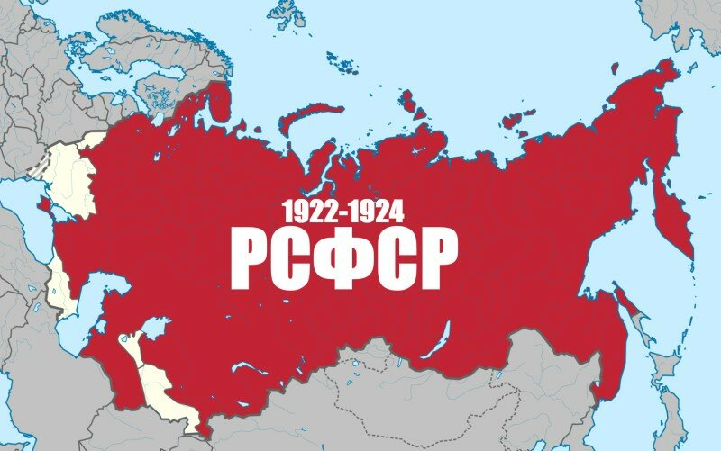

USSR
The socialist Russian state, which existed between the October Revolution of 1917 and the formation of the USSR in 1922, was formed on October 25 (November 7) 1917 after the overthrow of the Provisional Government. Before the adoption of the constitution on July 19, 1918, there was no single name for the Russian state; since July 19, 1918, the Russian Socialist Federative Soviet Republic was officially named (this name has been mentioned since February 1918). The name "Russian Soviet Federative Socialist Republic" was introduced by the Constitution of the USSR in 1936 and the Constitution of the RSFSR in 1937. Along with other official names, unofficial names such as the Russian Federation and Russia were also used during the Soviet period.
After the formation of the Union of Soviet Socialist Republics in 1922 and until 1991, the RSFSR is a sovereign union republic within the USSR. It was the largest in terms of area, population and economic power; it accounted for three quarters of the territory and over half of the population, two thirds of the industrial and about half of the agricultural products of the Soviet Union.
On December 25, 1991, the official name of the state was changed to the Russian Federation (Russia). On December 26, in connection with the termination of the existence of the USSR and the adoption of the corresponding declaration by the Council of Republics of the Supreme Soviet of the USSR, the Russian Federation became its successor state and legal successor
Map of the RSFSR (1921-1941)
[BACK TO HOME] [BACK TO REPUBLICS]